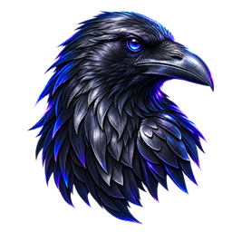

На груди
Основной вариант славянской коллекции. Рисунок виден спереди, спина остаётся свободной.

ArtS13StudioАвторская студия · Рязань Музыка Обсудить идею13th / Гид по выбору
Три вещи, которые стоит решить перед заказом: как футболка сидит, какого она цвета и где будет принт. Остальное поможем подобрать.
01 / Основа
Нравится свободная посадка или более собранный силуэт? Возьмите за ориентир футболку, в которой вам удобно. Так проще выбрать основу, чем только по букве размера.
Для славянской коллекции рассматриваем чёрные и белые хлопковые футболки. Доступные модели, точный состав, плотность и размеры уточняем перед заказом. Цвет основы и рисунок согласуем вместе.
02 / Размер
Буква XXL у разных производителей может означать разную посадку. Сравниваем сантиметры конкретной модели.
03 / Принт
Детальная графика должна хорошо смотреться и вблизи, и на самой вещи.
Размер нанесения согласуем под выбранную футболку: для основного принта ориентируемся на формат до А3 — 29,7 × 42 см. Сохраняем отступы от горловины и нижнего шва.
Небольшую надпись можно добавить по вашему пожеланию. Перед изготовлением сверим её написание, цвет и расположение.
Всё, что нужно для начала
Пришлите название или ссылку на дизайн, цвет футболки, замеры А и Б, количество и желаемый срок. Если чего-то пока не знаете — разберёмся вместе.